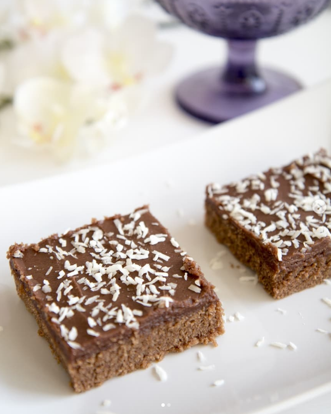

Love treats "Kärleksmums"

Description
Another swedish classic. The Swedish has many names for it, one being "Kärleksmums". This recipe is for 20 pieces.
Ingredients
- 200 g butter
- 2 dl milk
- 4 eggs
- 4 dl sugar
- 4 dl flour
- 2 1/2 baking soda
- 2 teaspoons vanilla sugar
- 1 1/2 dl cacao
- salt
Toppings
- 100 g butter
- 1/2 dl strong coffee
- 4 tablespoons cacao
- 2 teaspoons vanilla sugar
- 5 dl icing sugar
- 1 dl coconut flakes
Steps
- Heat the oven to 175°C
- Line a 25x35 cm baking tin (pan) with greaseproof paper or grease the pan and sprinkle with breadcrumbs.
- Melt the butter, pour in the milk and let cool.
- Whisk eggs and sugar until light and airy. (With an electric wisk - about 5 min).
- Mix flour, vanilla sugar, cacao, baking powder and salt. Fold this into the egg mixture. Add butter and milk and mix everything to a smooth batter. Pour into the baking tin.
- Heat in the oven for about 25 min. It should be cooked through
Toppings
- Melt the butter in a pot. Take from the heat and add the other ingredients exept for the coconut flakes. Stir until smooth.
- Spread the icing over the cooled down cake. Sprinkle the coconut flakes.
- When cold, cut the cake into 5x5 cm sqaures.